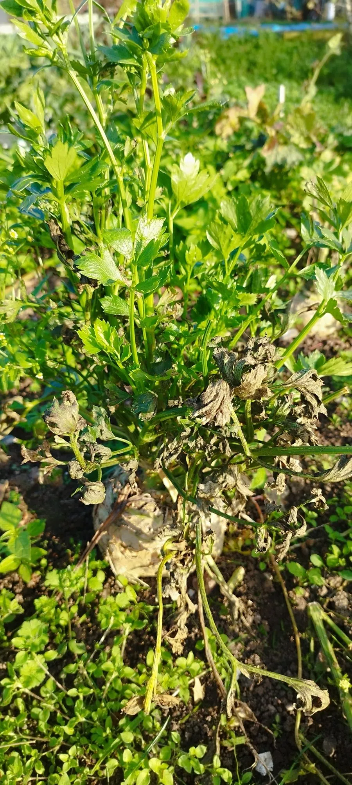

农作物与经济植物 · 植物界
根芹 Apium graveolens var. rapaceum

伞形科二年生草本，根部膨大成球、表面粗糙，肉质细密带芹菜香，是欧洲炖菜与浓汤常用的根菜之一。
- 分类
- 门被子植物门纲木兰纲目伞形目科伞形科属芹属
- 栖息环境
- 冷凉湿润的菜园与农田，喜光、喜水、需深厚疏松土壤
- 地理分布
- 原产地中海沿岸与欧洲南部，欧洲广泛栽培，中国部分地区引种
- 保护级别
- 暂无评估；栽培作物
物种志
根芹为伞形科芹属二年生草本，是芹菜的变种，株高 30–60 厘米。肉质根膨大成扁球形，直径 8–15 厘米，表面粗糙、灰褐色，内部白色细密，具浓郁芹菜香气。叶为二回羽状复叶，小叶深裂，深绿色，叶柄较细。第二年抽薹，复伞形花序，花小，白色；双悬果细小。
根芹原产地中海沿岸与欧洲南部，是欧洲传统根菜，中国近年有引种。膨大的根部可煮、烤、炖、做浓汤或切丝凉拌，风味比芹菜温和、质地似土豆，是法式“芹菜根沙拉”与炖菜的基础食材；叶片也可作香草。它富含膳食纤维与维生素 K，热量低。栽培喜冷凉、湿润与深厚疏松的土壤，需较长生长期（约 4–5 个月），育苗移栽，生长期间需充足水分，否则根部易空心、纤维化。
形态与习性
- 原产地地中海沿岸与欧洲南部
- 株高30–60 厘米，肉质根直径 8–15 厘米
- 根部扁球形、表面粗糙，内部白色细密
- 用途炖菜、浓汤、沙拉，叶片可作香草
- 栽培喜冷凉湿润，育苗移栽，生长期 4–5 个月
- 注意缺水易空心、纤维化，需均匀供水
趣味知识
- 根芹膨大的是下胚轴与主根，表面坑洼粗糙，削皮后露出洁白细密的肉质。
- 它的香气比芹菜温和，煮熟后质地像土豆，常用来做浓汤增稠。
- 法式经典“芹菜根沙拉”把根芹切丝拌蛋黄酱，是巴黎小酒馆的常客。
- 生长期缺水会让根部空心、纤维变粗，因此浇水要均匀。